美国“三剑客”救国悬念
原文链接 备份链接 当人类生存的主题被病毒、大流行病裹挟时，在白宫坐镇的特朗普、民间看好的疾病专家安东尼·福西和美联储主席鲍威尔纷纷出招，是老旧的套路还是定海神针，还未可知 文 |《财经》特派记者 金焱 发自华盛顿 编辑 | 苏琦 3 …
这只不过说明不是美国人慌了，更多是疫情的散布和加剧切切实实就在身边。
文 | 马纶鹏
战疫下半场，各国出奇招。英国近似无情的冷静下的“全民免疫”，中东很多国家直接关闭国境，而美国人民的日常生活似乎并没有封城的恐惧，也没有口罩印记的烦恼。但是每天攀升的案例和死亡数字增加，以及特朗普一贯的大嘴和临时措施，已经让接收欧洲回美的机场不堪重负，估计还有一波疫情。
美国约翰斯·霍普金斯大学发布的实时统计数据显示，截至北京时间3月16日，美国新冠肺炎确诊病例已达3499例。
现在是暗流涌动，美国人民不傻，第一件事就是囤货。新闻报道已经很多，从卫生纸到速冻食品，从枪支弹药到汽油储备。但很多都是片面和虚夸的情绪，说的好听一些是同是天涯沦落人，不好听就是幸灾乐祸的狭隘。
所以我用三个美国大超市/药店的多张图片告诉大家“美国售罄”的基本面，管中窥豹的交谈可以让读者们领略普通人是怎么面对和想象这个“末世感”。调查的两个连锁大超市是Food Lion和Kroger，比较美国化，属于美东海岸中南部工薪阶级常去的。Walmart 和Costco 暂时没去，因为他们已经国际化，下周可以去逛逛。另外一个是美国最大的CVS连锁药店，说是说药店，相当于我们的大型便利店，吃喝用度基本都有。用中国的标准衡量，在大型超市和小卖部之间的体量和规格。
美国人都喜欢一大包一大包地买，量贩十足。上周末各个货架都是满的，这个周末我看到了从未见过的“空架感”，冰火两重天。当然不是空空如也，很多物资还是充足的。这只不过说明不是美国人慌了，更多是疫情的散布和加剧切切实实就在身边。
*民以食为天*
1. 大米
平时几乎无人问津，毕竟不是美国人的主食。如今可是硬货……
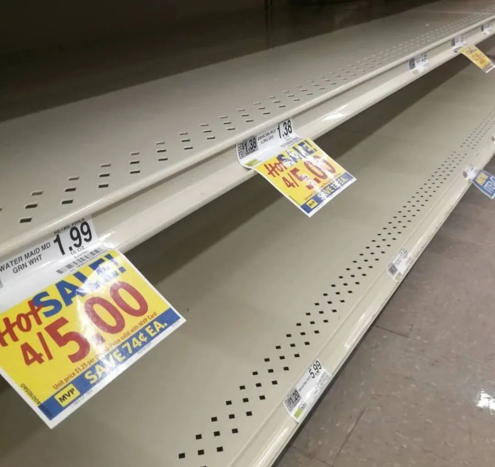
2. 牛奶
来过美国的都说这里奶制品又好又纯，可是三个店里几乎都卖光了。
第一张玻璃反射中的嘻哈壮汉跟我说，这他妈是怎么回事？我说，也许下周就会到的。他瞥了我一眼。
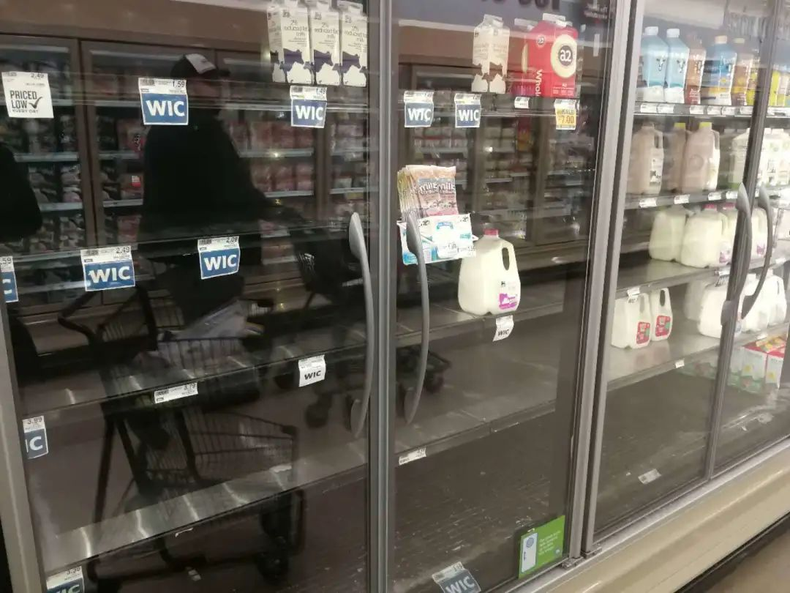
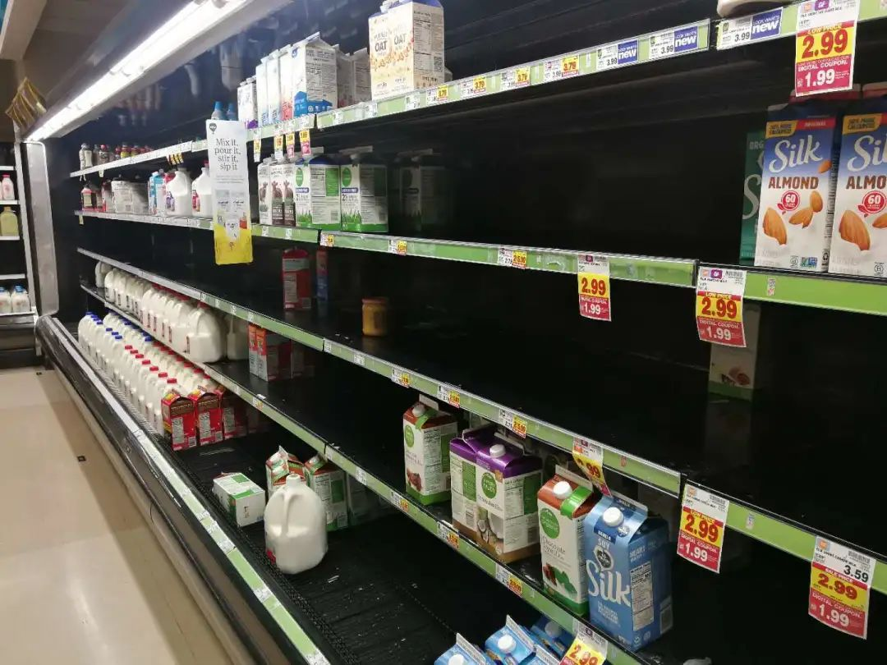
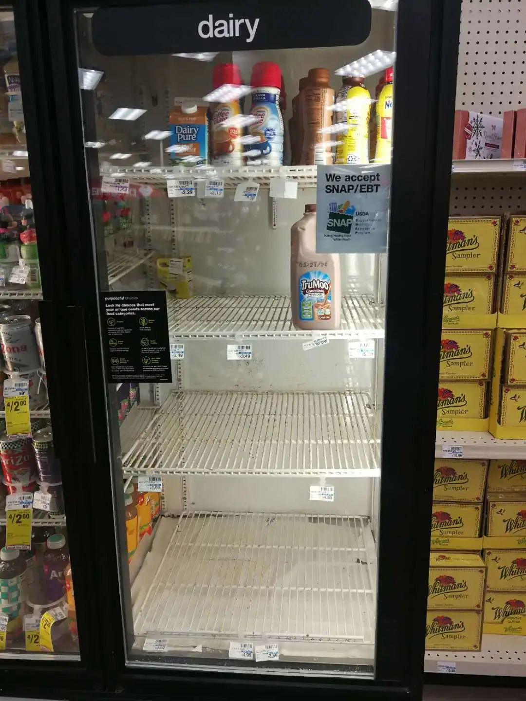
3. 瓶装水
重要性不言而喻。
虽然美国人有喝tap water(直饮水)的习惯，但也挡不住焦虑。


4. 面包
这对美国普通人很是关键，只是如今他们要望架兴叹了，连面粉都没了……
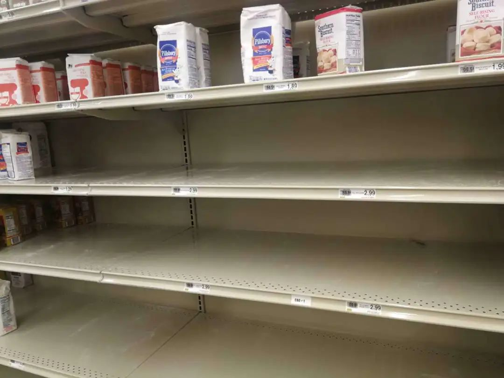

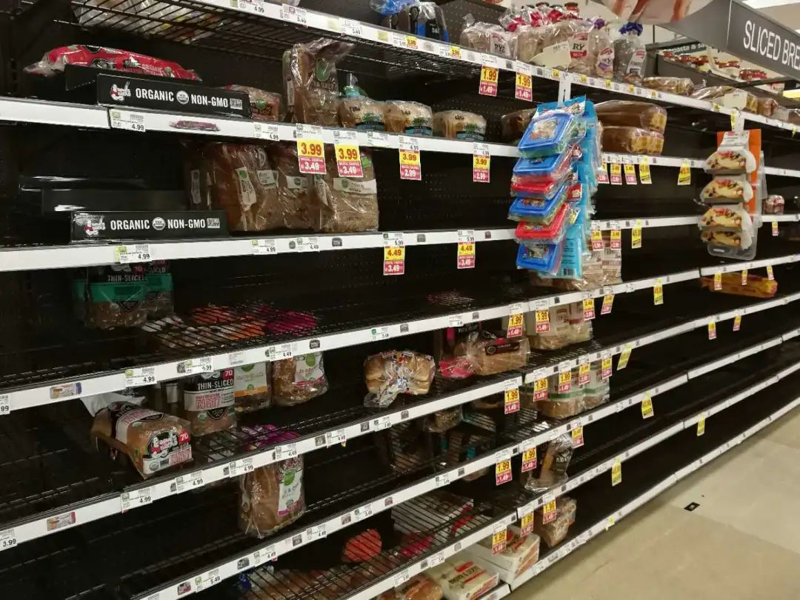
5. 牛肉、鸡肉
美国人吃得最多的肉类。货还是有的，但特价的都被抢光了。


6. 你想不到的披萨
对，因为简单、方便和美味，冷冻披萨向来是餐桌常菜。
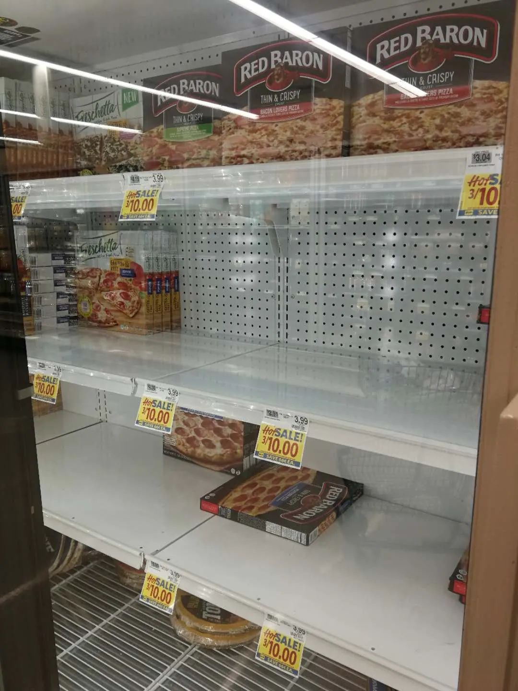

7. 其他
依次是意面、方便面、薯片、豆子、饮料、鸡蛋、果汁、爆米花、百吉圈……
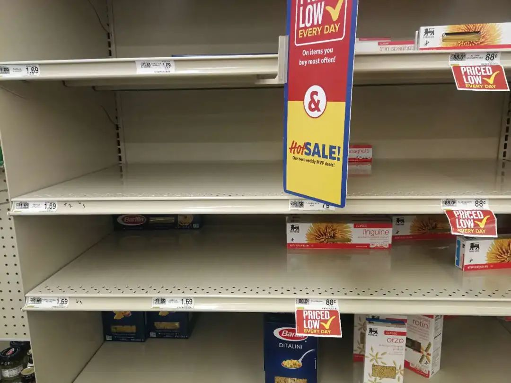


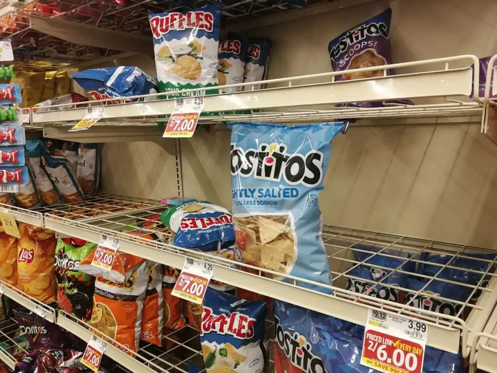


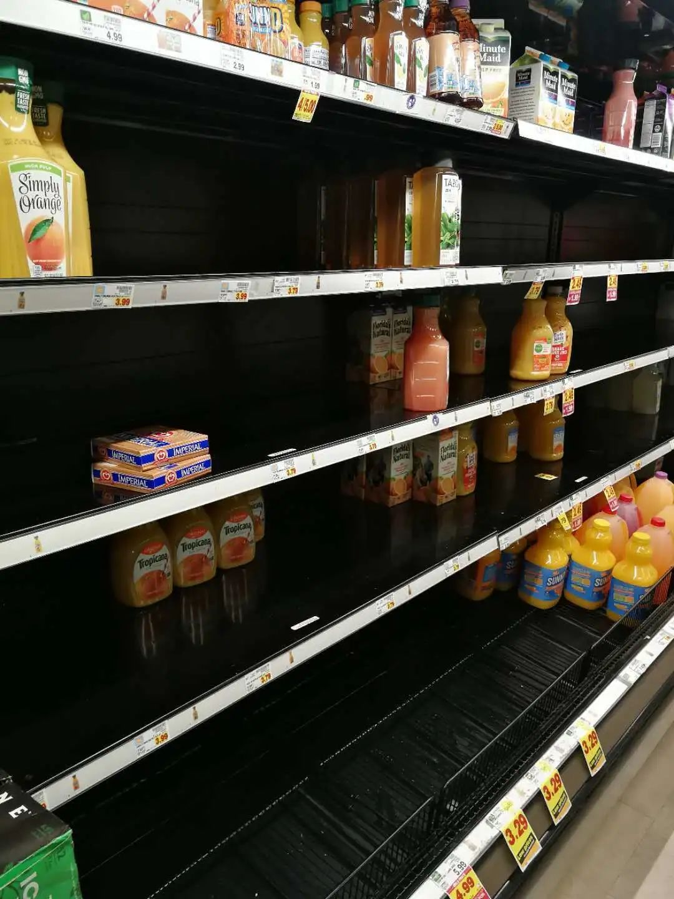
生活用品和医疗用品
口罩就想都不用想了，早在一月底就没货。当然，买了，你也看不到有人戴。网上都是卫生纸疯抢的图片上了热搜。是，这里三个超市都卖光了，所以中国的进出口商们有机会了。而个人防护的洗手液、消毒液什么的，自然也没有了。
1. 卫生纸
巍巍壮观，因为片甲不留。


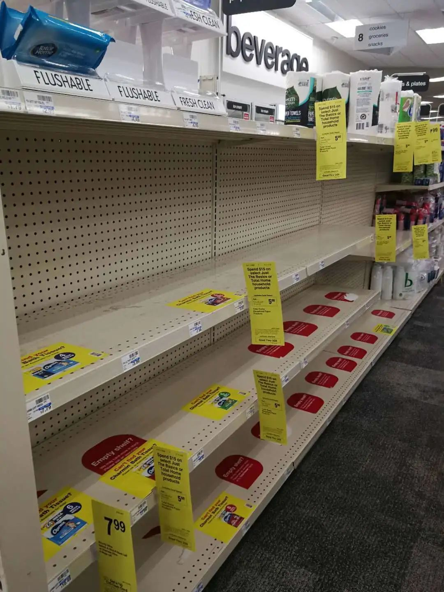

2. 各种洗手液、清洁剂、消毒剂
仿佛买了回去，就百病不侵？


还有袋装的冰块，一次性手套，防止胃酸的消化药也基本见底了。
是不是真的是要“深挖仓广积粮”？当然，赫赫有名的科罗拉啤酒(Corona)还是有的，它沾了新冠的福。


看着这么神奇的画面，我就问在努力补货的货架员：“都卖光了？” “是啊，没办法。”“什么时候的事？”“也就这两天。”“能不能补货呢？”“我们的供应商明天就会来了。只是，补多少，我们也不知道。”
再问收银员：“这几天你们很忙啊！”“是的，大家都来买东西。”“大家是不是都有些害怕？”“恐怕是的，谁知道呢。”
在空空的面包货架。一位美国大妈喃喃自语，都没有了，这是疯了吗？我之前碰到的嘻哈壮汉后来跟我说，世界末日也不过如此。我说，也不完全吧，还是有很多货的，很快就会补进。他看了我一眼，没说话，也许他要买的东西都没买全。
在Kroger恰巧遇见从阿根廷来美国做西班牙语助教的女生，之前见过。她说学校的课程全部取消，变成网上授课，忽如其来的变化。自己还不知道要不要回布宜诺斯艾利斯，但是那里的确诊数字也在上升，她觉得美国相对还是安全的。她又转过头，跟我说，我们应该学习中国，现在中国都好了。我冲她点点头。


· 欧洲27国无一幸免，张文宏：后续发展不容乐观，跨年度疫情风险越来越大
· 我在海外 | 看到英国政府发布“群体免疫”政策，我开始慌了
· 军事 | 受疫情影响，北约“寒冷反应”演习取消，规模更大的“欧洲捍卫者20”呢？
新民周刊所有平台稿件， 未经正式授权
一律不得转载、出版、改编或进行
与新民周刊版权相关的其他行为，违者必究


原文链接 备份链接 当人类生存的主题被病毒、大流行病裹挟时，在白宫坐镇的特朗普、民间看好的疾病专家安东尼·福西和美联储主席鲍威尔纷纷出招，是老旧的套路还是定海神针，还未可知 文 |《财经》特派记者 金焱 发自华盛顿 编辑 | 苏琦 3 …
原文链接 备份链接 编者按： 今天有两个新消息：好消息是，特朗普没感染，坏消息是，前一条消息并没有让美国人松一口气。相反，这两天美国的疫情紧张程度骤增，而这种紧张又通过各种社交媒体实时地传播到世界各地。 美国内部对于特朗普政府的疫情反应和 …
原文链接 备份链接 以下文章来源于我们来补课 ，作者寒潭清 [我们来补课 成人版十万个为什么，重拾你对世界的好奇心](#) 病毒在地球上存在了数十亿年，早已构成生态系统不可或缺的一部分，想彻底消灭病毒比消灭全部虫子更不现实，此次新冠肺炎疫 …
原文链接 备份链接 文｜《财经》特派记者 金焱 发自华盛顿 编辑｜苏琦 一个月前的世界是另一个样子。 2月9日的美国和英语世界，大多数人不知道什么叫“冠状肺炎”——这是有据可查的。花旗集团前全球外汇主管杰弗瑞·杨（Jeffrey …
原文链接 备份链接 文 |《巴伦周刊》中国撰稿人 郭力群 编辑 | 康娟 新冠肺炎疫情爆发后，中国部分经济活动一度陷入停滞，这一点从近期公布的经济数据中就能看出。中国海关总署3月7日发布的数据显示，今年前两个月，中国进出口总值5919.9 …